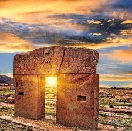

Bolivia es un país ubicado en el corazón de Sudamérica, es reconocido por su riqueza cultural, histórica y natural, este pais cuenta con una enorme diversidad de paisajes, tradiciones y costumbres que reflejan la identidad de sus pueblos queidos, entre sus principales atractivos turísticos se encuentran el Salar de Uyuni, la Laguna Colorada, la Puerta del Sol y muchisismos otros destinos que cautivan a visitantes de todo el mundo.
Este video nos muestra algunos de los impresionantes paisajes y atractivos turísticos que hay Bolivia, sobre todo destacando la belleza de sus montañas, pueblos tradicionales y sitios históricos que forman parte de la riqueza cultural y natural del país.